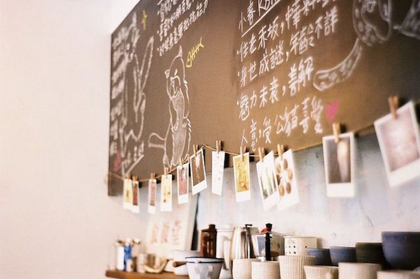
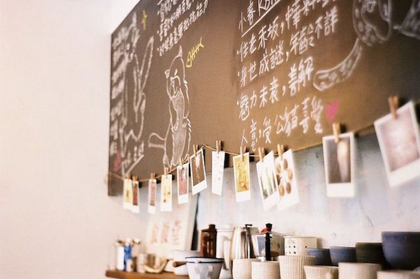

Our Story
Moonrise Coffee began as a passing thought between owners, Felix and Pauline Cheng. Both coffee lovers, they would venture to various cafes around the city to taste and judge which they liked best. But more importantly, they loved the relaxed atmosphere of a coffee shop. And like serious coffee drinkers, they sought out the smaller, local coffee shops and veered away from the chain franchises, believing coffee is best made when thought and care is put into it. It was on one of these laid back coffee shop days that they thought, "we should open our own coffee shop and make it a place we can hang out in with our friends."
Inspired by the local and family run coffee shops they have visited at home and in their travels, they soon put their heads together and drew out the plans that would be Moonrise Coffee. It would become a gathering place and also a way for Felix and Pauline to spend more time together. They love drinking coffee but also love sitting down with their family and friends over a cup of coffee.
Moonrise Coffee (named after Wes Anderson's Moonrise Kingdom, the first film Felix and Pauline saw together and still remains one of their favourites) is a special place for the coffee and pastry-loving owners. It's their home away from home, where they can welcome their friends and family and make new friends with those who stop by.